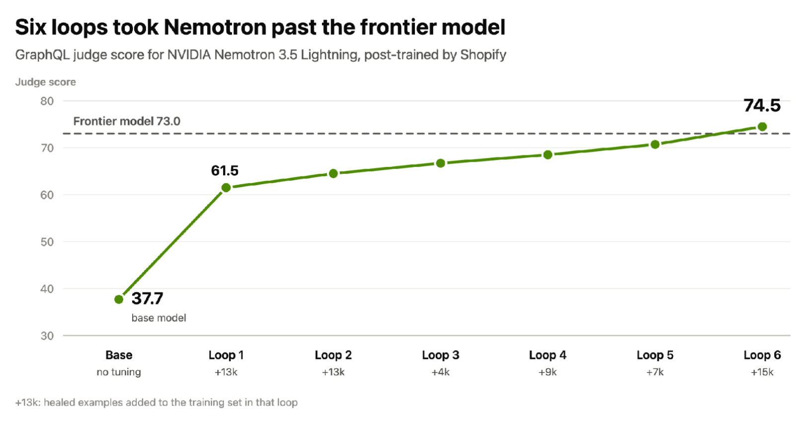
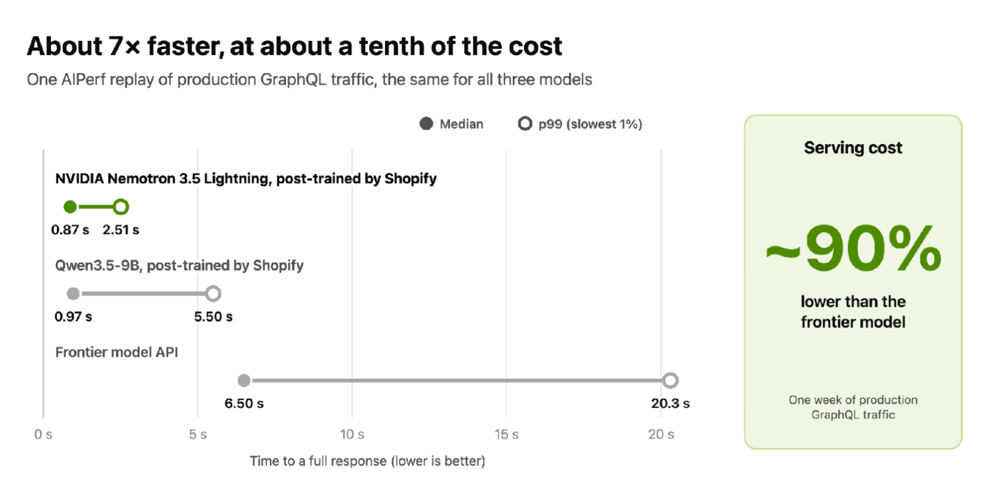
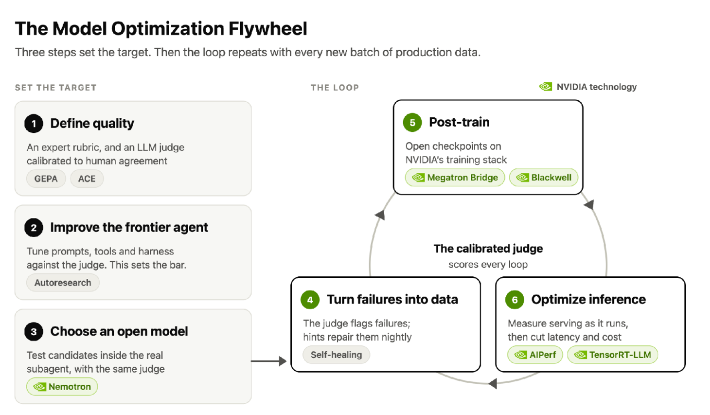
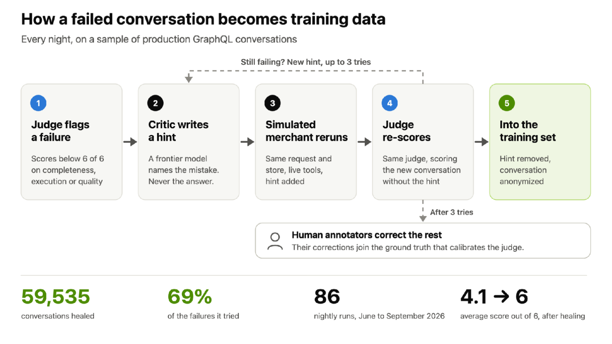

HELLO, HUMAN! COMMERCE INSIGHT 07
커머스 AI,
반복 업무의 전문가로 키우기
업무 분담부터 실패 교정과 평가까지,
운영 경험을 AI 개선에 연결하는 방법
커머스 AI가 같은 실수를 반복한다면, 모델을 바꾸기 전에 그 실수를 어떻게 기록하고 고치는지 살펴볼 필요가 있습니다.
“재고가 부족한 상품을 찾아주세요.”
짧은 요청이지만, ‘부족하다’의 기준과 대상 매장을 정하고 재고를 조회해야 합니다. 판매 속도까지 고려한다면 주문 이력도 필요합니다. 질문을 이해하는 일, 데이터를 가져오는 일, 결과가 맞는지 확인하는 일은 서로 연결돼 있습니다.
어떤 판단은 범용 AI에 맡기고, 어떤 반복 작업은 업무별 전문가에게 맡길까요? 오늘 담당자가 고친 결과는 내일의 개선으로 어떻게 이어질까요? Shopify의 공개 사례를 출발점으로, 우리 팀이 만들 수 있는 작은 제품을 살펴봅니다.
업무의 경계부터 정합니다. 실패 결과와 수정 이유를 함께 남깁니다. 품질을 지킨 상태에서 성공한 업무 한 건의 총비용을 비교합니다.
1. 범용 AI가 계획하고, 전문 AI가 맡은 일을 수행합니다
Shopify의 운영 보조 AI인 Sidekick은 범용 모델이 대화와 계획을 맡고, 일부 작업을 추가 학습한 공개 모델에 넘깁니다. GraphQL 담당 모델은 API 문서를 읽고 조회문을 만든 뒤 도구를 호출해 실행합니다. 이 업무에 NVIDIA Nemotron 3.5 Lightning을 적용했습니다. Shopify 기술 블로그 ↗
API는 다른 시스템에 정해진 형식으로 일을 요청하는 연결 방식이고, GraphQL은 그중 필요한 데이터 항목을 지정해 요청하는 방식입니다. 추가 학습은 이미 만들어진 모델을 업무용 사례로 더 훈련하는 과정입니다.
판매자가 사용하는 제품은 Sidekick입니다. Shopify 관리자 안에서 스토어 정보를 참고해 데이터 분석·주문 관리·상품 편집을 돕고, 적용 전에 변경 내용을 검토할 수 있게 합니다. 우리 시스템에 비슷한 기능을 만들 때도 모델뿐 아니라 조회 도구, 접근 권한, 검토 화면이 필요합니다. Sidekick 한국어 안내 ↗
조회 작업을 수행하는 역할
판매자와 대화하고
필요한 작업과 도구를 선택
문서와 데이터 구조를 확인하고
조회 도구를 호출해 결과 반환
Shopify가 설명한 분업을 단순화한 편집 도식입니다. 실제 서비스 화면이나 전체 시스템 구성도는 아닙니다.
우리 제품에서 나눌 경계도 모델 이름보다 업무로 정하는 편이 좋습니다. 예를 들어 상품 속성을 뽑는 작업이라면 입력할 설명, 반환할 필드, 누락을 처리하는 방법을 먼저 정합니다. 그래야 같은 업무를 여러 모델에 맡겨 비교할 수 있습니다.
NVIDIA 모델 카드에 따르면 이 모델의 파라미터(학습으로 조정하는 내부 값)는 총 300억 개입니다. 텍스트 처리 단위인 토큰 하나를 계산할 때는 약 30억 개가 활성화됩니다. 계산에 쓰는 부분이 작아도 전체 모델을 저장할 메모리는 따로 고려해야 합니다. 지원 언어 목록에 한국어는 명시돼 있지 않아, 한국어 문의의 품질은 직접 시험해야 합니다. NVIDIA 모델 카드 ↗
모델 내부의 계산 부분을 골라 쓰는 구조를 MoE(전문가 혼합)라고 부릅니다. 여기서의 ‘전문가’는 내부 구성 요소이고, 이 글의 ‘업무 전문가’는 특정 일을 맡도록 추가 학습한 모델을 뜻합니다.
2. 점수·속도·비용은 측정한 범위 안에서 읽습니다
2026년 10월 21일 Shopify가 공개한 GraphQL 업무의 자체 비교입니다. 추론은 학습한 모델이 입력을 받아 응답을 만드는 과정을 뜻합니다.
| 항목 | 비교 범용 모델 | 추가 학습한 모델 |
|---|---|---|
| 자체 품질 점수 | 73점 | 74.5점 |
| 요청 응답 시간 중앙값 | 6.50초 | 0.87초 |
| 추론 서비스 비용 | 비교 기준 | 약 90% 감소 |
전문 모델의 초기 점수는 37.7점이었습니다. 교정 예제 61,000개와 여섯 차례의 학습 루프를 거쳐 74.5점에 도달했습니다. 성과와 원본 그래프 ↗

- 축 읽기 가로는 학습 회차, 세로는 자체 평가 점수입니다.
- 추가량 읽기 +13k는 그 회차에 넣은 13,000개 사례입니다. 누적량이 아닙니다.
도표를 누르면 원본을 크게 볼 수 있습니다.
우리 실험에서도 모델 버전마다 새로 넣은 사례, 달라진 지침, 평가 점수를 함께 기록하면 개선 조건을 되짚을 수 있습니다. 다만 사례 수만으로 점수가 오른 원인을 단정할 수는 없습니다.
비교 대상 범용 모델의 이름과 점수의 오차 범위는 공개되지 않았습니다. 1.5점 차이를 범용 능력의 우위로 넓힐 수 없습니다. 비용 역시 학습·평가·인건비를 합친 총비용 절감률이 아닙니다.

- 채운 점 · 중앙값 요청을 빠른 순서로 놓았을 때 가운데 값입니다.
- 빈 점 · p99 요청의 99%가 이 시간 안에 끝납니다. 가장 느린 한 건은 아닙니다.
- 비용 상자 일주일의 운영 GraphQL 트래픽을 비교 범위로 표시합니다.
도표를 누르면 원본을 크게 볼 수 있습니다.
두 전문 모델은 중앙값이 비슷해도 오래 걸리는 요청에서는 차이가 납니다. 상담 담당자의 대기 시간을 비교할 때도 p99를 함께 보는 이유입니다.
이 시험은 고객 대화 원문 대신 합성 텍스트로 운영 트래픽을 재현한 AIPerf 부하 시험입니다. 0.87초는 모델 응답을 끝내는 시간의 중앙값이며, 판매자의 전체 업무 완료 시간이 아닙니다. 비교할 때는 입력·출력 길이, 요청량, 이전 계산을 재사용하는 캐시 조건을 맞춰야 합니다. AIPerf 재생 방식 ↗
3. 실패 기록은 고칠 곳을 찾을 때 자산이 됩니다

- 왼쪽 · 준비 품질 기준을 정하고, 기존 에이전트를 개선한 뒤 모델을 고릅니다.
- 오른쪽 · 반복 실패를 학습 자료로 바꾸고, 추가 학습과 추론 최적화를 진행합니다.
- 중앙 · 평가 사람의 판정에 맞춰 보정한 평가기가 결과를 채점합니다.
제공 Shopify · 출처·단계별 설명
도표를 누르면 원본을 크게 볼 수 있습니다.
Shopify는 사람의 판정에 맞춰 AI 평가기의 기준을 다듬고, 기존 에이전트의 지침과 도구부터 개선합니다. 이때 GEPA·ACE는 평가기에 주는 지침을 다듬는 데 쓰입니다. 두 방법은 관련 논문 소개에서 살펴봅니다.
추가 학습은 그다음 단계입니다. 대화를 저장하거나 지침을 고치는 것만으로 모델의 내부 값인 가중치가 바뀌지는 않습니다. Shopify가 8월에 공개한 학습 과정은 다음 두 단계입니다. Sidekick의 학습 과정 ↗
입력과 교정된 수행 결과를 짝으로 주어, 원하는 업무 처리 방법을 익히게 합니다.
같은 요청의 여러 응답을 평가하고, 더 높은 평가를 받은 행동을 할 가능성을 높입니다.
10월 Nemotron 실험의 세부 학습 설정까지 같았다고 단정할 수는 없습니다. 우리 팀에서는 먼저 같은 입력과 도구로 비교할 환경을 만들고, 평가가 중요한 누락을 제대로 잡아내는지 확인해야 합니다.
실패한 대화를 그대로 정답으로 저장하지 않습니다

- 재시도 실패한 요청에 힌트를 넣어 다시 수행합니다.
- 재평가 평가기에는 힌트를 숨기고 결과를 채점하게 합니다.
- 통과하면 대화에서 힌트를 빼고 익명화해 학습에 씁니다.
- 세 번 모두 실패하면 사람이 고칩니다. 이 자료는 평가기의 기준을 다듬는 데 씁니다.
도표를 누르면 원본을 크게 볼 수 있습니다.
69%는 교정을 시도한 실패 사례 중 고친 비율입니다. 전체 문의의 자동 처리율이 아닙니다. 4.1→6은 6점 만점의 교정 전후 평균으로, 앞의 74.5점과 척도가 다릅니다.
59,535건은 6~9월에 교정한 대화 수, 61,000개는 여섯 학습 회차에 넣은 예제 수입니다. 원문은 두 집계의 차이를 설명하지 않습니다.
배송 문의로 옮긴 가상 예를 들어보겠습니다. AI가 취소 의도를 놓쳤다면 “문의 후반의 다른 요청도 확인하라”는 단서로 다시 수행하게 할 수 있습니다. 그 결과가 두 의도를 모두 찾았는지, 주문 상태에 없는 사실을 보태지 않았는지 별도로 검사합니다. 그럴듯하게 고친 문장을 곧바로 정답으로 삼지 않는 것입니다.
재실행에는 힌트를 썼으므로, 추가 학습한 모델이 도움 없이도 수행하는지는 새로운 사례로 시험해야 합니다.
정책 오류나 조회 장애처럼 모델 밖에 원인이 있는 실패도 있습니다. 이런 사례를 무조건 학습에 넣으면 잘못된 처리 방법을 굳힐 수 있습니다. 다음은 원본 과정을 우리 팀의 개선 업무로 옮길 때 제안하는 분류입니다.
요청 · 당시 근거 · AI 제안 · 담당자의 최종 판단
정책이 모호한가? 도구가 잘못됐나? 필요한 정보가 없나? 수행 능력이 부족한가?
조회 조건과 설명을 고치고
누락된 상태·정책을 연결합니다.
정답과 수정 이유를 정리하고
학습 비용을 함께 비교합니다.
이전 버전과 같은 조건으로 비교합니다.
기준 충족제한된 업무에 적용
다음 결과 수집
기준 미달기존 버전 유지
원인 분류로 돌아가기
한 사례에 원인이 여러 개일 수 있습니다. 지침·도구·데이터를 먼저 고친 뒤에도 남는 수행 문제에 추가 학습을 검토합니다.
| 개선할 것 | 커머스의 예 | 반영할 위치 |
|---|---|---|
| 업무 지침 | 부분 취소 문의에서 확인할 항목 | 프롬프트·도구 설명 |
| 최신 사실 | 지금의 재고·주문 상태 | 업무 API의 조회 결과 |
| 반복되는 수행 능력의 한계 | 지침을 고쳐도 복합 의도를 계속 놓침 | 교정 사례로 추가 학습 검토 |
| 확정된 규칙 | 환불액 계산·처리 권한 | 기존 코드·정책 설정 |
재고 수량을 외우게 하기보다 필요한 시점에 조회하게 하는 편이 맞습니다. 일을 처리하는 방법을 익히는 것과, 지금의 사실을 확인하는 것은 다른 책임입니다.
4. AI를 채점하는 기준도 제품의 일부입니다
배송 문의에 답은 자연스럽게 썼지만 함께 들어온 취소 의도를 놓쳤다면 좋은 결과일까요? 주문 상태는 맞게 읽었어도 근거 없이 도착일을 약속했다면 문제가 됩니다. ‘좋은 답변’을 구체적인 업무 질문으로 바꿔야 합니다.
| 평가 항목 | 확인할 질문 | 확인 방법 |
|---|---|---|
| 의도 이해 | 배송과 취소 문의를 모두 찾았는가? | 담당자가 정한 의도 목록과 비교 |
| 근거 일치 | 해당 주문·배송 기록에 근거했는가? | 주문 식별자·조회 시점·근거 필드 대조 |
| 정보 부족 | 모르는 상태에서 확답하지 않았는가? | 누락·조회 실패 사례의 보류 여부 |
| 다음 단계 | 담당자가 확인할 일을 구체적으로 제시했는가? | 업무 기준에 따른 사람의 검토 |
| 업무 효율 | 재분류·수정이 줄었는가? | 수정 건수와 준비부터 완료까지의 시간 |
AI 평가기도 검증 대상입니다. 2023년 대규모 언어 모델(LLM) 평가 연구는 답변의 순서·길이와 평가 모델의 선호가 점수에 영향을 줄 수 있다고 보고했습니다. 주문 번호나 조회 기간은 코드로 대조하고, 의미 판단은 사람의 표본 검토와 함께 보는 편이 좋습니다. AI 평가기의 편향 연구 ↗
Shopify는 평가 점수가 실제 서비스 성과를 반영하는지도 확인하라고 제안합니다. 두 버전을 비교한 과거 A/B 실험과 결과 방향이 일치하는지, 특정 행동을 일부러 나쁘게 만들면 해당 점수가 내려가는지 점검하는 방식입니다. 평가기 검증 방법 ↗
우리 팀에서는 정상적인 문의도 무작위로 뽑고, 복합 의도·조회 실패·정책 변경 같은 어려운 사례도 따로 준비할 수 있습니다. 전체 평균과 함께 취소 의도 누락률, 근거 없는 확답률을 보고 각각의 분모를 남깁니다. 드문 중대 오류가 평균 점수에 가려지지 않게 하기 위해서입니다.
5. 비용은 성공한 업무 한 건으로 계산합니다
전문 모델의 호출 비용이 낮아도 재시도와 사람의 수정이 늘면 전체 비용은 커질 수 있습니다. 비교 단위는 같은 기간에 업무 기준을 충족한 완료 건수입니다.
성공 한 건의 비용
전체 처리 비용에는 실패·재시도·고성능 모델로 넘긴 요청도 포함합니다. 모델 API 사용료나 서버 운영비를 빠짐없이 합산하고, 데이터 연결·조회와 사람의 확인·수정 비용을 더합니다. 같은 비용을 두 번 세지 않으며, 학습·평가·유지보수 비용은 비교 기간에 어떻게 나눠 넣었는지 밝힙니다.
담당자가 고쳐 완료한 일은 최종 성공에 포함할 수 있지만, AI가 처음부터 맞힌 비율과는 나눠 봐야 합니다. 수정 비용을 빠뜨리면 같은 품질의 일을 더 싸게 처리했는지 판단하기 어렵습니다.
자체 운영은 요청이 적을 때도 장비 비용이 남을 수 있습니다. 반복 업무의 양, 모델 교체 주기, 운영 인력을 함께 계산해야 합니다. 호출량이 작거나 정책이 자주 바뀐다면 외부 API 방식이 유리할 수 있고, 같은 작업이 안정적으로 반복된다면 전문 모델 투자를 검토할 여지가 생깁니다.
6. 첫 제품은 배송 문의 분류 도우미로 좁혀봅니다
기존 상담 화면에 배송 지연 문의를 분류하고 확인할 사항을 제안하는 기능을 붙여볼 수 있습니다. 아래는 상담 담당자를 위한 헬로우 휴먼의 제품 제안이며, Shopify의 실제 기능을 설명한 도식은 아닙니다.
담당자가 판단합니다
“송장은 떴는데 며칠째 움직이지 않아요. 언제 오는 건가요? 취소도 되는지 알려주세요.”
-
AI문의 의도와 필요한 조회를 정리
배송 상황 확인 + 취소 가능 여부 문의를 찾고, 주문·배송 조회를 제안합니다.
-
서버권한을 확인한 뒤 필요한 정보만 조회
담당자의 접근 권한과 주문 번호·요청 형식·조회 범위를 검사합니다. 통과하면 읽기 전용 API로 필요한 항목만 조회하고 호출량을 제한합니다.
-
권한·조회 결과에 따라 처리
조회 성공·근거 확보AI근거와 확인할 항목 정리
문의 유형과 근거 필드·조회 시점을 묶어 제안합니다. 최종 안내는 담당자의 검토를 거칩니다.
조회 불가·근거 부족AI·서버‘확인 필요’로 전달서버는 권한·조회 오류를 표시합니다. AI는 근거가 부족하거나 판단이 어려운 항목을 보류하고 담당자에게 넘깁니다.
-
담당자두 경로 모두 사람이 확인
허용된 조회로 최신 상태와 적용 정책을 확인하고 분류·안내를 결정합니다. 근거가 부족하면 보류를 유지합니다.
최종 분류·보류 여부와 수정 이유를 기록합니다. ‘함께 들어온 취소 의도를 놓침’ 같은 사례를 다음 평가에 활용합니다.
집하 기록 없음 ≠ 출고하지 않음. 송장만 있고 집하 기록이 없다면 ‘근거 부족’에 해당합니다. 기록 반영이 늦을 수 있으므로 출고 여부를 단정하지 않습니다.
첫 범위는 담당자에게 제안하는 데까지입니다. 고객에게 답변을 자동 발송하거나 주문을 취소하지 않습니다. 금액 계산과 상태 변경은 기존 업무 코드가 맡습니다.
권한과 호출량 설계에는 Shopify의 읽기·쓰기 접근 범위 ↗와 GraphQL 호출 제한 ↗을 참고할 수 있습니다. 여기서 ‘쿼리 비용’은 API 요금이 아니라 호출량을 제한할 때 쓰는 점수입니다.
같은 원칙을 다른 업무에 옮긴다면
| 후보 업무 | AI가 맡을 작은 범위 | 평가할 것 |
|---|---|---|
| 상품 속성 추출 | 원문에서 소재·용량 등 지정 필드 추출 | 원문 일치, 단위 오류, 없는 속성 생성 |
| 정산 차이 조사 | 계산된 대사 결과의 원인 후보·증빙 정리 | 근거 거래 일치, 조사 시간 |
| 운영 데이터 조회 | 질문을 허용된 조회 도구와 조건으로 변환 | 대상·기간 정확성, 조회량, 결과 누락 |
정산 금액처럼 규칙이 확정된 계산은 코드가 수행하고, AI는 설명과 근거 정리를 돕게 합니다. 업무마다 이 경계를 구체적으로 정해야 합니다.
7. 관련 논문과 도구는 개선할 대상에 맞춰 읽습니다
Shopify의 8월 글에서 인용한 네 논문과 관련 개발 도구를 해결하려는 문제에 따라 묶었습니다. 각 묶음은 선택지이며 도입 순서가 아닙니다.
같은 실수를 지침으로 줄이기
- 논문GEPA
- 실행 기록과 실패 이유로 지침 후보를 만들고 비교합니다. 서로 다른 사례에 강한 후보를 유지합니다.
- 논문ACE
- 수행에서 얻은 교훈을 작업 지침서에 항목별로 추가·수정해 중요한 예외가 사라지는 일을 줄입니다.
- 도구DSPy의 GEPA
- 평가 사례와 피드백으로 지침 후보를 시험하는 구현입니다. 탐색에도 모델 호출 비용이 듭니다.
바꾸는 것은 입력 지침입니다. GEPA·ACE는 모델 가중치를 추가 학습하지 않습니다.
좋은 수행 방법을 모델에 익히기
- 논문Distilling Step-by-Step!
- 정답과 함께, 큰 모델이 만든 풀이 설명도 작은 모델의 학습에 씁니다. 커머스 성능은 별도 검증이 필요합니다.
- 모델Nemotron 3.5 Lightning
- 추가 학습할 수 있는 공개 가중치입니다. 공개 모델 자체가 Shopify의 학습 결과물은 아닙니다.
- 도구Megatron Bridge
- 지원하는 Hugging Face 모델의 형식을 변환하고, 여러 GPU에서 추가 학습하도록 돕습니다.
방법·학습 대상·학습 도구를 모은 칸입니다. 학습 자료와 평가 기준은 팀이 준비해야 합니다.
반복해서 읽는 긴 지침 줄이기
- 논문Gist Tokens
- 긴 지침을 모델이 읽을 짧은 토큰 표현으로 압축합니다. 사람이 읽는 요약문을 만드는 방식은 아닙니다.
- 적용 사례Shopify의 입력 압축
- 원논문은 압축하도록 모델을 학습시킵니다. Shopify는 모델 가중치를 고정하고 gist 토큰의 수치 표현을 학습한다고 설명합니다.
압축 뒤에도 예외 정책과 보류 조건을 지키는지 확인해야 합니다.
모델을 운영하고 속도 재기
- 실행vLLM / TensorRT-LLM
- 서버에서 모델의 응답 생성을 맡습니다. TensorRT-LLM은 NVIDIA GPU에 맞춰 추론을 최적화합니다.
- 측정AIPerf
- 시험 요청을 보내 응답 시간과 처리량을 잽니다. 같은 입출력 길이·요청량·캐시 조건에서 비교합니다.
속도와 처리량은 운영 지표입니다. 답변이 업무상 맞는지는 따로 평가합니다.
Sidekick은 Shopify 관리자에서 사용하는 AI 도우미입니다. 위 묶음들은 개발팀이 개선 방법과 구성 요소를 찾을 때 참고하는 자료입니다.
이 지도는 역할에 따른 분류이며, 모든 도구를 함께 연결해 검증한 구성은 아닙니다. 기존 API와 범용 모델로 먼저 시험하고, 드러난 한계에 맞는 방법을 고른 뒤 같은 업무 사례로 개선 여부를 확인하면 됩니다.
8. 평가할 사례를 먼저 만들고, 같은 조건에서 비교합니다
반복해서 발생하고 담당자가 맞고 틀림을 설명할 수 있는 업무 하나를 고릅니다. 배송 문의 도우미라면 다음 순서로 작은 실험을 설계할 수 있습니다.
- 현재 방식의 기준을 남깁니다. 담당자의 처리 시간, 재분류·수정 빈도, 자주 놓치는 의도를 기록합니다. 단순 키워드 규칙도 비교 대상으로 둡니다.
- 개선용 사례와 최종 시험용 사례를 나눕니다. 같은 주문의 연속 문의와 유사 문구가 양쪽에 섞이지 않도록 묶어 분리합니다. 정책 버전도 맞춥니다.
- 같은 입력으로 비교합니다. 기존 방식, 규칙 기반 분류, 범용 모델과 API를 연결한 제안을 비교합니다. 전문 모델은 준비됐을 때 별도 후보로 추가합니다.
- 품질과 전체 비용을 함께 봅니다. 복합 의도 누락, 잘못된 확답, 조회 실패 후 보류, 담당자의 수정 시간과 성공 한 건의 비용을 기록합니다.
- 실패 원인에 맞춰 고칩니다. 도구·지침·데이터를 개선한 뒤에도 수행 능력의 한계가 반복되고, 처리량과 비용이 뒷받침할 때 추가 학습을 검토합니다.
목표치는 실험 전에 정합니다. 특히 취소 의도 누락과 근거 없는 확답을 얼마까지 허용할지 합의해야 합니다. 적은 표본에서 중대 오류가 없었다고 안전성이 입증됐다고 보지 않고, 다른 기간과 문의 유형에서도 다시 확인합니다.
기준을 통과하면 담당자가 제안을 검토하는 제한된 운영부터 시작합니다. 비교 기간에는 정책·행사·배송 지연 규모의 차이를 기록하고, 이전 방식으로 되돌릴 기준도 정합니다. 같은 사례를 반복해서 본 효과를 줄이도록 담당자와 처리 순서를 바꿔 비교할 수 있습니다.
분류 정확도·수정 시간·처리비용이 검토 과정의 지표라면, 같은 문의로 다시 연락한 비율과 잘못된 안내로 생긴 불만은 고객 결과의 지표입니다. 운영 속도가 빨라졌다고 매출·이익도 늘었다고 단정하지 않습니다.
9. 모델이 바뀌어도 업무 기준과 수정 경험은 남습니다
모델을 바꿔도 재사용할 수 있는 자산은 업무 기준, 예외 사례, 담당자의 수정 이유입니다. 이를 제품의 일부로 관리해야 다음 모델도 같은 기준으로 평가할 수 있습니다.
남겨야 할 기록은 요청, 당시 근거와 조회 시점, 시스템의 제안, 최종 판단, 수정 이유, 적용한 정책 버전입니다. 배송 이력이 나중에 바뀌더라도 당시 판단을 검토할 수 있어야 합니다. 예전 정책에 따른 정답을 현재 학습 자료에 그대로 섞지 않도록 적용일도 관리합니다.
다른 업무로 넓힐 때는 도구 규격과 평가 방법을 재사용할 수 있습니다. 다만 공통 평가 방법과 고객별 데이터는 구분해 관리해야 합니다. 상담·주문 기록을 학습에 쓸 수 있는 범위를 정하고, 필요한 정보만 남깁니다.
반복 업무 하나에서 시작하기
전문성을 쌓으려면
무엇을 고쳤는지 기록하고,
다음 결과가 나아졌는지 확인해야 합니다.
자료와 읽는 법
공식 원문과 논문을 2026년 10월 22일에 확인했습니다. 성과표는 Shopify의 자체 보고이며 독립 재현 결과가 아닙니다. 배송 문의 도우미·비용 기준·비교 실험은 헬로우 휴먼의 제안입니다. 모델 학습, AIPerf 시험이나 주문·배송 API 연동을 직접 수행한 글은 아닙니다.
- Shopify · How Shopify turns open models into task experts · 2026.10.21. 역할 분담과 GraphQL 성과, 원본 그래프.
- Shopify · Sidekick’s continual learning loop · 2026.08.05. 평가기 보정, 지침 개선과 추가 학습.
- NVIDIA · Nemotron 3.5 Lightning 모델 카드 · 모델 구조, 지원 언어와 운영 조건.
- GEPA · Reflective Prompt Evolution · 2026.02 개정. 수행 기록을 이용한 프롬프트 최적화.
- ACE · Agentic Context Engineering · 2026.03 개정. 지침을 점진적으로 축적하는 문맥 개선.
- Distilling Step-by-Step! · Findings of ACL 2023. 풀이 근거를 활용한 작은 모델의 학습.
- Learning to Compress Prompts with Gist Tokens · NeurIPS 2023. 프롬프트의 학습 기반 압축.
- Judging LLM-as-a-Judge with MT-Bench and Chatbot Arena · 2023. AI 평가기의 편향을 다룬 연구.
- AIPerf · Trace Replay · 요청 시각과 길이를 반영한 부하 시험.
- Shopify API access scopes · 읽기·쓰기 접근 범위.
- Shopify GraphQL Admin API rate limits · 쿼리 비용에 따른 호출 제한.
- Sidekick 한국어 도움말 · Shopify 관리자에서 제공하는 기능과 검토 방식.
- DSPy · GEPA in depth · 지침 후보의 탐색·평가·피드백 구조.
- NVIDIA · Megatron Bridge · 모델 형식 연결과 학습 지원.
- AIPerf / vLLM / TensorRT-LLM · 부하 시험과 추론 서비스 실행 도구.
원본 도표 4점은 Shopify 기술 블로그에서 인용했으며 이미지의 내용·비율·색을 바꾸지 않았습니다. 한국어 캡션과 해설, 가상 예시는 헬로우 휴먼이 작성했습니다.
함께 읽기 · ShopGym · 쇼핑 AI를 같은 조건에서 비교하는 연습장 / 인사이트 02 · 추천 근거 검사기
커머스 인사이트 목록으로 돌아가기